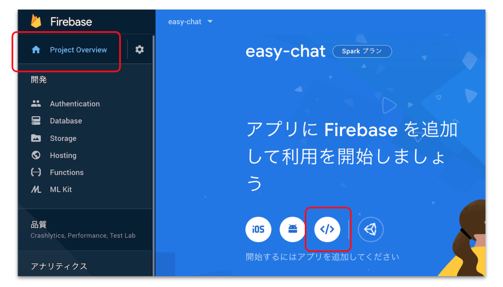
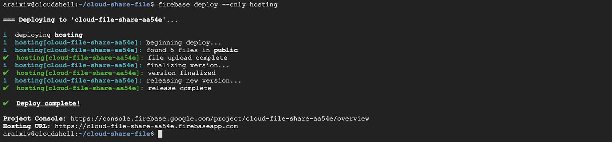

概要
実際にお問い合わせフォームを作りながら、Firebaseの使い方を学びましょう！
What you'll learn
- Firebaseとは何か分かる
- Cloud Functionsの追加たが分かる
- サービスを公開するまでの流れがわかる
Cloud Functionsを（ちょっと）使いこなす
Cloud Functions for Firebaseをメインに利用します。
基本的な使い方やログの見方を学びましょう。
OAuth認証について（ちょっと）詳しくなる
GmailのAPIにアクセスするためにOAuth認証というものを利用しています。
実際に手元で動かして、動作を確かめてみましょう。
Firebase でサービスを公開する流れを知る
Firebase でサービスを公開してみて、その手軽さを体感してみましょう。
アーキテクチャ概要図
- ClientがブラウザでHostingにアクセスし、html, css, jsのWebアプリを表示
- WebアプリからFunctionsを呼び出し
- FunctionsからGmail APIを呼び出し
Cloud Shellとは
- GCPのサービスの一つ
- ブラウザでアクセス可能な、クラウドベースの統合開発環境(IDE)
- Githubと連携することで簡単に開発環境を構築可能
上のリンクをクリックするとCloud Shellが開き、リポジトリをクローンしてコードを取得してきます。
ディレクトリ構成はこんな感じになっています。
mail-form
├── README.md
├── firebase.json
│
├── functions <---- Functionsで使用
│ ├── index.js
│ └── package.json
│
├── oauth <---- Gmailの認証に使用
│ └── index.js
│
└── public <---- お問い合わせフォームのweb画面
├── image
│ └── MC_icon_white.png
├── index.html
├── scripts
│ └── main.js
└── styles
└── main.css
プロジェクトの作成
- 「プロジェクトを追加」を選択。
- 好きなプロジェクト名を入力して「続行」を選択。
- Google アナリティクスは無効にして「作成」を選択。

Firebase プロジェクトを紐付け
Cloud Shell で以下のコマンドを実行します。
CloudShell
firebase login --no-localhost --reauth
Firebaseプロジェクトを作成したアカウントでログインし、表示されるトークンをCloudShellにペーストして、CloudShellとFirebaseプロジェクトの紐付け完了です。

次のコマンドで先ほど作成したプロジェクトのプロジェクトIDを確認します。
CloudShell
firebase projects:list
次のコマンドで作成したプロジェクトを設定します。
CloudShell
firebase use <PROJECT_ID> // <PROJECT_ID>はさっきメモしたものに書き換えます
確認コマンドで正しいプロジェクトに (current) とついていればOKです。
CloudShell
firebase projects:list

Firebaseのプランを変更
Firebase Functionsを利用するため、料金プランを変更する必要があります。
次の操作を行います。
- 左メニューの「アップグレード」選択
- 従量制の「プランを選択」を選択
- 請求先を「main」に設定して「次へ」を選択
- 「購入」を選択
Firebaseコンソールからアプリを追加
Firebaseではアプリという単位でリソースを管理します。
次の操作を行います。
- コンソールトップ画面のwebマーク(
)を選択 - 任意のアプリのニックネームを設定
- 「このアプリの Firebase Hosting も設定します。」にチェック
- 「アプリを登録」を選択
- ②③④は事前に準備済みなので何もせず「次へ」

ローカルで動作確認
以下コマンドでローカル環境で動作確認を行います。
CloudShell
firebase serve --only hosting

出力されたURLをクリックしてこんな画面が表示されたらOK。(まだメールはできない)
Cloud Functions for Firebase とは？
Cloud Functions for FirebaseとはGoogleの提供しているFaaS（Function as a Serbise）のFirebase版。
利用できるランタイムが Node.js に限定される代わりに、他Firebase機能との連携が簡単。
FaaSとは？
Function as a Serbiseの略で、マイクロサービス化の流れを受けて流行ったサービス。
「関数」という単位でクラウド上に保管/呼び出しが可能。
Functionsの作成
利用するパッケージをfunctions/ にインストールします。
CloudShell
npm install --prefix=~/cloudshell_open/handson-firebase-mail-form/functions/
簡単な関数「helloWorl」を作成します。
functions/index.js : L7 ~ 10 の コメントを解除
exports.helloWorld = functions.https.onRequest((request, response) => {
response.send("Hello from Firebase!");
console.log("console messages")
});
Functionsをデプロイ/実行
以下コマンドで「helloWorl」をデプロイします。
CloudShell
firebase deploy --only functions
デプロイが完了すると関数にアクセスするURLが「Function URL (helloWorld)」に出力されます。
curlコマンドで実行して「Hello from Firebase!」と返ってきたら成功です。
CloudShell
curl <発行されたURL>
実行ログはFunctionsのログから確認できます。
Gmail API を使うためにOAuth認証を通す必要があります。
OAuthとはアプリ連携でよく利用される認証方式です。
OAuthの概要についてはこちらの記事、詳細な動作についてはこちらの記事が分かりやすかったです。
OAuth認証
STEP1
Gmail API を有効化し、credentials.jsonを取得します。
次の操作を行います。
- 「Enable the Gmail API」を選択
- 適当なプロジェクト名を入力して「NEXT」を選択
- Configure your OAuth clientに「Desktop app」を選択して「CREATE」を選択
- 「DOWNLOAD CLIENT CONFIGURATION」を選択してcredentials.jsonを取得
- 「DONE」を選択
次にcredentials.json を oauth/ にアップロードします。
次の操作を行います。
- oauthフォルダ上で右クリック
- 「Upload Files...」を選択
- credentials.jsonをアップロードする
STEP2
oauth/ にクライアントライブラリをインストールします。
CloudShell
npm install googleapis@39 --prefix=~/cloudshell_open/handson-firebase-mail-form/oauth/
STEP3
トークンを取得するためにindex.jsを実行します。
CloudShell
cd ~/cloudshell_open/handson-firebase-mail-form/oauth/ node index.js
次の操作を行います。
- 出力されたURLへアクセスする
- 自分のアカウントを選択
- 「詳細」>「安全ではないページに移動」を選択
- メールメッセージと設定の表示で「許可」を選択
- ユーザー本人に代わってメールを送信で「許可」を選択
- 選択内容を確認して「許可」を選択
- コードをコピーしてCloudShell「Enter the code from that page here」に貼り付け
成功すると token.json が生成されラベルが表示されます。
jsonファイルの移動
取得したjsonファイルを functions/ に移動します。
次の操作を行ってください。
- oauth/credentials.json を functionsディレクトリにドラック&ドロップする
- oauth/token.json を functionsディレクトリにドラック&ドロップする
メールアドレスの登録
送付先メールアドレスを環境変数として登録します。
次のコマンドでfunctionsから呼び出せる環境変数を登録することができます。
CloudShell
firebase functions:config:set to.address="email@gmail.com"
関数の作成
メール送付の関数「sendMail」を作成します。
functions/index.js : L47 ~ 70 の コメントを解除
// 環境変数、json ファイル読み込み
const toAddress = functions.config().to.address;
const credentialsJson = require("./credentials.json");
const tokenJson = require("./token.json");
exports.sendMail = functions.https.onCall(async (data, context) => {
// メール情報の作成
const auth = createAuth(credentialsJson, tokenJson);
const gmail = google.gmail({ version: "v1", auth });
const email = createEmail(data);
// メール送付
try {
gmail.users.messages.send({
userId: "me",
resource: {
raw: email,
},
});
} catch (err) {
console.error(`send failed. ${err}`);
throw new functions.https.HttpsError("internal", "send failed.");
}
});
Functionsをデプロイ/実行
以下コマンドで「sendMail」をデプロイします。
CloudShell
firebase deploy --only functions
関数呼び出し側の作成
web画面からfunctionsを呼び出す処理を記述します。
public/scripts/main.js : L23 ~ 35 の コメントを解除
MailForm.prototype.sendMessage = async function (e) {
e.preventDefault();
const data = {
name: this.nameInput.value,
email: this.emailInput.value,
message: this.messageInput.value,
};
try {
await firebase.functions().httpsCallable("sendMail")(data);
this.successSnackbar();
this.resetForm();
} catch {
this.errorSnackbar();
}
};
ローカルで動作確認
以下コマンドでローカル環境で動作確認を行います。
メールが送付できるようになっていれば成功です。
CloudShell
firebase serve --only hosting
Webサービスをデプロイする
アプリをインターネットに公開し、誰でもアクセスできるようにするため、Firebase Hosting にデプロイします。
CloudShell
firebase deploy

自動的に URL が振られ、どこからでもアクセス可能！
- Hosting URL: に表示されている URL にアクセスすると、作成したアプリが表示されます。
- インターネットに公開されているので、他の端末からもアクセスできます！
コンソールのHostingから発行されたURLとデプロイ履歴などが確認できます。
Webページにアクセスして動作確認する
発行されたURLへアクセスして動作確認を行います。
適当なお問い合わせ内容を送付してみましょう！
Firebaseを使ってお問い合わせフォームを作成することができました！
ここから先は各自思い思いに改良してみてください。
アンケート
最後にアンケートがありますので、より良い勉強会作りのためにご協力お願い致します。
利用しないプロジェクトは削除するようにしましょう。
次の手順を実行してください。
- 削除対象のプロジェクトへ移動する
- 「歯車マーク」>「プロジェクトを設定」を選択
- 一番下までスクロールし、「プロジェクトを削除」を選択
- チェック項目を確認して「プロジェクトを削除」を選択